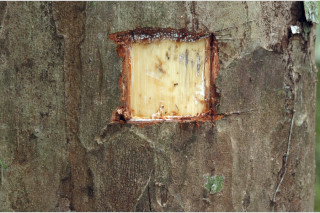

Images :



| Habit : | Large trees , buttressed , up to 35 m tall. |
| Leaves : | Simple , opposite , decussate ; petiole slender 0.5-1.2 cm long, planoconvex in cross section; lamina 7.5-14 x 1.5-3.5 cm, narrow elliptic to narrow lanceolate , apex narrowly acuminate , base acute , margin entire , glaucous beneath; secondary_nerves many, slender, closely parallel , perpendicular to midrib , sometimes obscure . |
| Inflorescence / Flower : | Flowers bisexual , solitary or in pairs, axillary ; petals white; stamens many, orange yellow. |
| Fruit and Seed : | Berry , ovoid to globose , apiculate , striate , 1-4 seeded . |